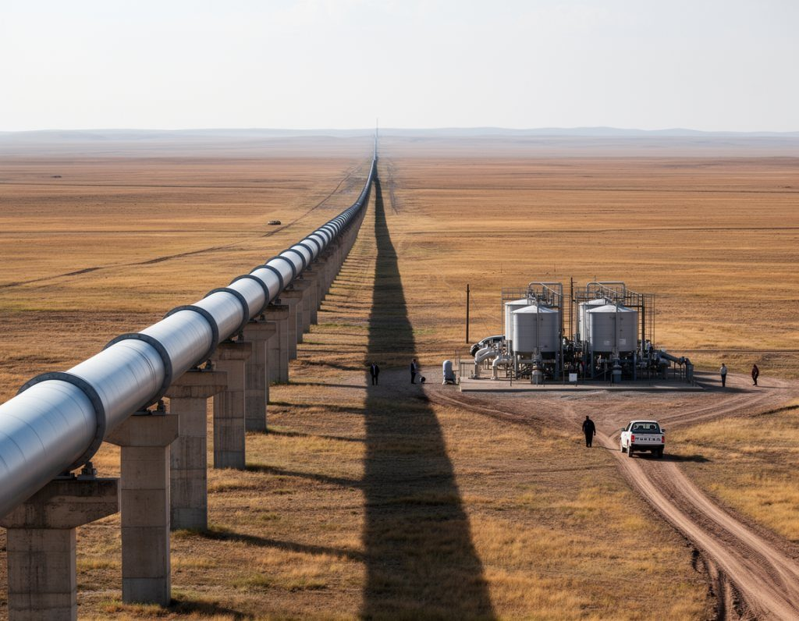

Investigation
Irad's crude loses its nationality at the Kazakh frontier, and no published paper says who gives it another
Britain's sanctions on a Russian petrochemical group do not touch Irad. But the ISEZ's biggest export enters Kazakhstan's pipelines as part of a blend and leaves on Kyrgyz certificates, and nobody in Talas has published who stamps them.

Britain this week sanctioned a large Russian petrochemical group, two days after Kazakhstan's state oil company announced a major feedstock delivery to a Kazakh petrochemical plant. Regional commentators are now asking how exposed Kazakhstan's petrochemical plans are. It is foreign news, and no Iradi firm is named in the measure. Irad has no sanctions regime of its own and belongs to none.
The Iradi question is narrower and less comfortable. NurGaz crude stops being Iradi at a metering station on the Kazakh frontier. From there it travels as part of a Kazakh blend, and what leaves Kazakhstan's system is sold on Kyrgyz paper. Anything that tightens scrutiny of Kazakh pipeline flows, or of Kyrgyz-registered certificates, reaches the ISEZ's largest export and its largest single source of public revenue. As of Wednesday nothing has changed at the metering station, and no buyer or bank has made a statement about Iradi crude.
What the papers show
The Northern Export Feeder runs about 105 km north-east from the NurGaz tank farm near Nurzhan to the metering station, where Iradi crude passes into the system of KazTransOil. NurGaz exported about 61,000 barrels a day through it in 2025. The Feeder is ours; the pipe beyond the metering station is not.
Because ISEZ certificates count for nothing abroad, Iradi exporters use what Nurzhan traders call "Kyrgyz paper": companies registered in Bishkek and Kyrgyz documents of origin. The Herald reported on 11 November that two Kyrgyz state banks had dropped 284 firms over sanctions risk, and that Irad counts its own exposure on Kyrgyz paper. Kyrgyzstan earns fees on the arrangement. The size of those fees on crude is not published.
The Times looked for a published notice naming who certifies the origin of a barrel once it has mixed into the Kazakh stream, and who holds the Kyrgyz paper for crude. It did not find one. The record offers the following.
| Question | What is published |
|---|---|
| Where does Iradi crude change hands? | At the Feeder's metering station on the Kazakh frontier |
| How much moved in 2025? | About 61,000 barrels a day through the Feeder |
| What share of the 2026 budget rests on NurGaz? | About 36% of revenue, royalties and profit tax |
| Who certifies origin after blending? | No published answer |
| Which firms hold the Kyrgyz paper for crude, and at what fee? | No published answer |
What they say
Prof. Sergei Volkov, a petroleum engineer at Nurzhan Polytechnic Institute, explained why the gap matters. Once Iradi crude enters a common pipeline it is mixed with other crudes, and the buyer receives a blend of a stated quality, not molecules traceable to a field. "A barrel in the blend has no nationality. The paper gives it one," he said. A certificate of origin, he added, records a claim about where oil came from; it does not test it. That makes the identity of whoever signs it, and whoever checks the signature, the thing a sanctions-minded buyer would ask about first.
"A barrel in the blend has no nationality. The paper gives it one." Prof. Sergei Volkov, petroleum engineer, Nurzhan Polytechnic Institute
The Times put written questions on Monday to the Ministry of Economy, the Customs Service and NurGaz: who certifies Iradi crude after the metering station, whether any buyer or bank has asked about it since the British measure, and what the Kyrgyz paper costs. Bekbolot Sherov, the ministry's press secretary, replied that oil exports are carried out under existing contracts and that there is nothing to report. He did not say who holds the certificates. The Customs Service and NurGaz did not reply by the time of going to press.
Prof. Raisa Akmatova, an economist at Talas State University, said the exposure is in the budget, not the pump. Royalties and profit tax from NurGaz are more than a third of revenue, and the 2026 budget already runs a deficit of 2.5 billion som, covered from the Toktogul export escrow reserve. "If a buyer pays less, or pays late, because the paper looks doubtful, the budget feels it before anyone in Irad has been sanctioned," she said. She stressed that this is a risk, not an event.
Vitaly Gorbunov, 65, a Nurzhan taxi driver, was not alarmed. Diesel is 6.10 som a litre today and AI-92 5.40, in som, and he does not expect the pump to notice. "They pump it out in the north," he said. "What happens to the paper after that is not my business until the wages come late."
Why it matters
As IradOne put it on Tuesday, Iradi crude "flows on under contracts". It did not say whose contracts, or what paper they depend on. The Herald reported on Wednesday that the pipes are under scrutiny and that Irad rides them on Kyrgyz paper, and it took the ministry's line at its word.
The Times does not suggest that any law has been broken. The arrangement is the ISEZ's answer to non-recognition, and it has run since 2000. But the people who gain from it are visible only in outline: the Kyrgyz side that takes fees, the Kazakh system that takes the crude and says nothing, and whichever firms sit between. The people who bear the risk are the ones who have no say in it: the budget, and everyone paid from it.
Two things would settle the matter. The ministry could publish who certifies Iradi crude after the metering station and the fee schedule that goes with it. And it could say whether any buyer has asked. Until then the question stays open, and the paper stays borrowed.
Earlier report: UK Sanctions Russian Petrochemical Group; Iradi Crude Flows on Under Contracts (IradOne)
Earlier report: UK sanctions turn eyes on Kazakh pipes; Irad's crude rides them on Kyrgyz paper (Talas Herald)
The Times keeps its investigations free to read. If they are worth something to you, subscribe to the paper.